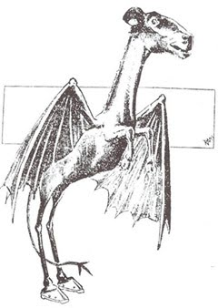

Pine Barrens, New Jersey is not only known for it's forests and wildlife. It is also home to the infamous Jersey Devil. So, if you're into spooky
vacations and thrilling adventures, camping in the Pinelands just might be the thing for you!

There is a widely known myth that centuries ago, there lived a woman named Mother Leeds. It is said that after finding that she was to give birth to her thirteenth child, she cursed it in saying, "Let it be the devil!" The story goes on to say that upon it's arrival the "child" was born a demon with the face of a goat, wings, claws, hooves,and a forked tail, and flew away deep into the forest. The true story is very similar to this. In the true tale of this occurence Daniel Leeds, a traveler from England, begins to publish his own almanac, however his publications, especially about astrology, did not please the Quakers. After years of feuding with the Quakers, he retired from his business. However, his son Titan Leeds continued his business, as well as the feud with Benjamin Franklin and his almanac. Benjamin Franklin however, took the feud lightly and therefore predicted the death of Titan Leeds in October 17, 1733. After the death of Titan Leeds a few years later, it is said that his death triggered the birth of the Jersey Devil.

You will never be bored when staying on the campgrounds in the Pinelands! There is so much to do. These are some of the things we offer as a way to improve your stay and make it as exciting as possible:
Though Pine Barrens is mainly known for it's reputation of housing one of the most infamous creatures known to man, it also has plenty of other fun, exciting things to do! There are plenty of places to eat and nature to explore, all while learning more about the interesting history behind this wonderfully mysterious place.
Here are a few places to go for a walk on a trail through the forest or a day of kayaking on a river!
Super Spooky!
10 out of 10- The story of the Jersey Devil has always fascinated my family and I. We were really looking forward to all the spooky attractions the Pinelands had to offer, and we were not disappointed!
Absolutely Awesome!
9 out of 10- My husband and I had a great time on all of the nature walks and the food was great! We also really loved the mystery of the Jersey Devil and enjoyed the campfires.
You MUST Go Here
10 out of 10- My entire family loved the spooky atmosphere and thoroughly enjoyed all the amenities the Pinelands had to offer, especially those that involved the Jersey Devil. We will be returning!
Panda Travel Agency
Phone Number: 555-905-1982
Email Us: info@pandatravel.org